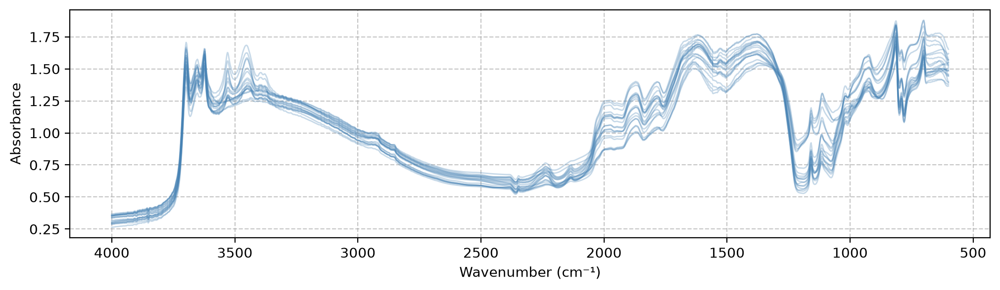

from soilspecdata.all import *SoilSpecData
Load the Open Soil Spectral Library (OSSL) as spectra and soil properties ready for machine learning.
OSSL is an open database of soil spectra, with the lab-measured soil properties of the same samples. Version 1.2 combines 10 spectral libraries, from the US KSSL library (86,603 samples) and the European LUCAS survey (40,175) to smaller regional ones. It holds 135,651 samples, with mid-infrared (MIR) spectra for 85,684 of them and visible and near-infrared (VISNIR) spectra for 64,644. OSSL publishes the whole database as one CSV file of about 1 GB.
SoilSpecData downloads and caches that file, and gives the spectra in wavenumbers. It aligns spectra with soil properties by sample. One line then gives you X and y for a model. The OSSL documentation describes the database and how OSSL builds it.
The SoilSpecData documentation covers the full API.
Installation
pip install -U soilspecdataTo install the development version, with the development tools nbdev and twine, run this in the project root:
pip install -e .[dev]Features
- Download and cache the OSSL database, at data level
L0orL1 - VISNIR (visible and near-infrared) and MIR (mid-infrared) spectra, in wavenumbers, for any wavenumber range
- Soil properties and metadata as pandas DataFrames, indexed by sample ID
- Spectra and target variables aligned by sample, ready for machine learning
- Further datasets to come …
Quick start
from soilspecdata.all import * imports load_ossl, OSSL, Spectra and get_cache_path. Each also has its own module, such as soilspecdata.datasets.ossl, for explicit imports. Load OSSL, then get the MIR spectra and CEC values of every sample that has both. The first call downloads about 1 GB. Later calls read the cached file instead. Loading took 24 seconds on an Apple silicon Mac. Memory use peaks at about 12 GB while pandas reads the file. The loaded data then takes 3.5 GB:
ossl = load_ossl()X, y, ids = ossl.mir().xy('cec_usda.a723_cmolc.kg')
X.shape, y.shape((57062, 1701), (57062, 1))Loading the data
load_ossl() loads the L0 data. L0 keeps the lab method of each source dataset. load_ossl(level='L1') loads the L1 data. L1 converts properties measured with different lab methods to one target method.
load_ossl caches each downloaded file in ~/.soilspecdata/, under the file’s own name, such as ossl_all_L0_v1.2.csv.gz. To download the file again:
ossl = load_ossl(force_download=True)Spectra
OSSL MIR spectra cover 600 to 4000 cm⁻¹. VISNIR spectra cover 350 to 2500 nm, or 4000 to 28571 cm⁻¹. mir and visnir return both in wavenumbers, in increasing order. They return only the samples with a value at every wavenumber in the range.
Their wmin and wmax parameters select a wavenumber range. By default, mir returns 600 to 4000 cm⁻¹, which covers all 85,684 MIR spectra. By default, visnir returns 4000 to 25000 cm⁻¹ (400 to 2500 nm). That range covers all 64,644 VISNIR spectra. Only 23,880 of them start at 350 nm.
The MIR spectra over the default range:
mir_data = ossl.mir()The VISNIR spectra between 8000 and 25000 cm⁻¹:
visnir_data = ossl.visnir(wmin=8000, wmax=25000)Both methods return a Spectra, with these fields:
wavenumbers: wavenumbers in cm⁻¹, in increasing orderspectra: one row per sample, one column per wavenumbermeasurement_type:ref(reflectance) orabs(absorbance)sample_ids: the sample ID of each row
Printing a Spectra shows the start of each field:
print(visnir_data)Spectra attributes:
------------------
Available attributes: wavenumbers, spectra, measurement_type, sample_ids
Wavenumbers:
-----------
[8000, 8013, 8026, 8039, 8052, 8065, 8078, 8091, 8104, 8117]
Shape: (426,)
Spectra:
-------
[[0.4707, 0.4702, 0.4697, 0.4692, 0.4687],
[0.6087, 0.6081, 0.6074, 0.6068, 0.6062],
[0.6257, 0.625 , 0.6243, 0.6237, 0.6231],
[0.6598, 0.6589, 0.6581, 0.6574, 0.6567],
[0.6655, 0.6644, 0.6634, 0.6624, 0.6615]]
Shape: (64644, 426)
Measurement type (Reflectance or Absorbance):
--------------------------------------------
ref
Sample IDs:
----------
['594ef6c549138844cf79a0fece6de7d2', '7417caf4328373c2f6b2977817f508b6',
'e01efc61d0222fc5ca44656483dfa665', '5c1dcddd9cfe540857cc2bfea3d9a44b',
'393ab838badfeb6e12520f09c83e479b', 'c8f162486487b8525403e55c00d60cfb',
'e3b9c5d0e649e49726e1fed397f18417', 'c48a2a1f0cc04b26537e0c653530cbf2',
'bf2ea7ea2964e7d0bd42443e095d1b56', '2507c34c14815cb6ec303e5bf9156072']
Total samples: 64644The first 20 MIR spectra, plotted with matplotlib:
from matplotlib import pyplot as plt
plt.figure(figsize=(12, 3))
plt.plot(mir_data.wavenumbers, mir_data.spectra[:20,:].T, alpha=0.3, color='steelblue', lw=1)
plt.gca().invert_xaxis()
plt.grid(True, linestyle='--', alpha=0.7)
plt.xlabel('Wavenumber (cm⁻¹)')
plt.ylabel('Absorbance');
Soil properties and metadata
Selecting columns of ossl returns a pd.DataFrame, indexed by sample ID (id). Sample IDs are OSSL’s id.layer_uuid_txt values. They are unique across all source datasets. dropna keeps the samples that have a value. The CEC (cation exchange capacity) of every sample that has one, in cmolc/kg:
properties = ossl[['cec_usda.a723_cmolc.kg']].dropna()properties.head()| cec_usda.a723_cmolc.kg | |
|---|---|
| id | |
| 3998362dd2659e2252cd7f38b43c9b1f | 6.633217 |
| 2bab4dbbac073b8648475ad50d40eb95 | 3.822628 |
| 29213d2193232be8867d85dec463ec00 | 3.427324 |
| 8b1ee9146c026faee20a40df86736864 | 1.906545 |
| 6e8e9d1105e7da7055555cb5d310df5f | 13.403203 |
Any column in ossl.meta_cols can serve as a target or as metadata. Soil-lab column names follow the pattern <property>_<method>_<unit>. For example, cec_usda.a723_cmolc.kg is the CEC measured with USDA method A723, in cmolc/kg. The OSSL database description describes all the variables. To find the columns for one property, filter on its name:
[c for c in ossl.meta_cols if c.startswith('cec')]['cec_iso.11260_cmolc.kg', 'cec_usda.a723_cmolc.kg']Metadata such as coordinates can have missing values. Without dropna, the selection keeps every sample:
metadata = ossl[['longitude.point_wgs84_dd', 'latitude.point_wgs84_dd']]Selecting samples
ossl behaves like a pandas DataFrame indexed by sample ID. Filter samples with ordinary pandas conditions on its columns. The result supports every method above. The KSSL samples only:
kssl = ossl[ossl['dataset.code_ascii_txt'] == 'KSSL.SSL']
len(kssl), len(ossl)(86603, 135651)Training data
xy returns the spectra X, the targets y and the sample IDs ids of the samples that have both, in the same row order. It accepts several targets, and works on any selection of samples. The KSSL samples with both CEC and organic carbon values:
X, y, ids = kssl.mir().xy(['cec_usda.a723_cmolc.kg', 'oc_usda.c729_w.pct'])
X.shape, y.shape, ids.shape((50825, 1701), (50825, 2), (50825,))Upgrading from 0.0.x
Version 0.1.0 changed the API. To update code written for version 0.0.x:
get_ossl(url, force_download, level)is nowload_ossl(level, url, force_download).get_mirandget_visnirare nowmirandvisnir.ossl.get_aligned_data(spectra, targets)is nowspectra.xy(targets).ossl.get_properties(cols)is nowossl[cols]. Add.dropna()forrequire_complete=True.OSSLData,SpectraDataandproperties_colsare nowOSSL,Spectraandmeta_cols.ossl.dfis indexed by sample ID (id.layer_uuid_txt) instead of by row number.
Version 0.1.0 still accepted the old names. Version 0.2.0 removes them. If your code runs on 0.1.0 without a DeprecationWarning, and doesn’t use OSSLData, SpectraData, properties_cols or get_properties, it runs on 0.2.0 unchanged.
Contributing
Contributions are welcome! Please feel free to submit a Pull Request.
License
SoilSpecData is under the Apache 2.0 licence.
OSSL publishes its data under CC BY 4.0, unless a dataset states otherwise. The dataset.license.title_ascii_txt column gives the licence of each source dataset. In v1.2, three datasets have their own licence:
LUCAS.SSLandLUCAS.WOODWELL.SSL: JRC License AgreementAFSIS1.SSL: ODC Open Database LicenseAFSIS2.SSL: CC0
Check these terms before you publish or share results that use those datasets.
Citation(s)
- OSSL Library: Safanelli, J.L., Hengl, T., Parente, L.L., Minarik, R., Bloom, D.E., Todd-Brown, K., Gholizadeh, A., Mendes, W. de S., Sanderman, J., 2025. Open Soil Spectral Library (OSSL): Building reproducible soil calibration models through open development and community engagement. PLOS ONE 20, e0296545. https://doi.org/10.1371/journal.pone.0296545
- SoilSpecData: Albinet, F., 2026. SoilSpecData, version 0.2.0. https://github.com/franckalbinet/soilspecdata